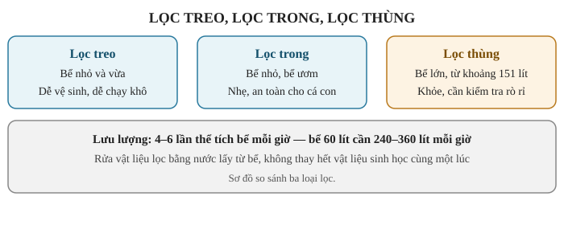

Lọc treo, lọc trong, lọc thùng: chọn lọc theo bể
Tác giả: Ruler
Lọc là bộ phận giữ cá sống, nhưng không có một loại lọc nào tốt nhất cho mọi bể. Lọc treo hợp với bể cộng đồng vừa, lọc thùng hợp với bể lớn, lọc trong hợp với bể nhỏ và bể tạm, còn lọc bọt biển hợp với cá con và tôm. Người mới hay mua lọc theo giá tiền hoặc theo lời quảng cáo trên hộp, rồi mới phát hiện lọc đó ồn quá, dòng nước mạnh quá, hoặc vệ sinh khó quá so với thời gian mình có. Bài này giúp bạn chọn đúng loại lọc ngay từ đầu, dựa trên cỡ bể, loài cá và cách bạn chăm bể.
Bài 4 đã viết lọc có ba vai trò — cơ học, sinh học và hóa học — và giới thiệu ngắn ba loại lọc thường gặp ở bể nhỏ và vừa. Bài 9 đã viết kỹ cách vệ sinh từng loại lọc mà không làm mất vi khuẩn có lợi. Bài này không viết lại hai bài đó. Bài này đi sâu vào cách mỗi loại lọc hoạt động, ưu và nhược điểm của từng loại, cỡ bể nào hợp với loại nào, và những rủi ro hay bị bỏ qua khi dùng từng loại. Bài này chỉ nhắc ngắn một kết quả của chu trình nitơ, vì chu trình đó đã được giải thích đầy đủ ở Bài 2: vi khuẩn trong lọc chuyển amoniac thành nitrit rồi thành nitrat, và vi khuẩn đó cần chỗ bám cùng dòng nước có oxy liên tục.
1. Lọc làm ba việc, và việc nào quan trọng nhất
Mọi loại lọc đều làm ba việc, nhưng không loại nào làm cả ba việc tốt như nhau. DBC Aquatics, một trang hướng dẫn nuôi cá cảnh, chia ba việc của lọc thành cơ học, sinh học và hóa học. Lọc cơ học giữ lại cặn bẩn như thức ăn thừa, phân cá và lá cây rụng, để bạn lấy ra. Lọc sinh học là nơi vi khuẩn có lợi sống, chuyển amoniac độc thành nitrit rồi thành nitrat. Lọc hóa học dùng than hoạt tính hay nhựa trao đổi để hút mùi, màu nước và một số chất hòa tan. TheCycledTank, một trang hướng dẫn khác về lọc, viết cùng một cách chia ba việc này, và nhấn mạnh lọc sinh học là việc không được bỏ qua, vì đó là việc giữ nước an toàn, trong khi lọc cơ học chỉ làm nước nhìn trong.
Thứ tự ưu tiên của người mới nên là sinh học trước, cơ học sau, hóa học cuối cùng. Một lọc có nhiều chỗ cho vi khuẩn bám sẽ giữ cá sống tốt hơn một lọc chỉ giỏi giữ cặn bẩn. Than hoạt tính thì hữu ích trong một số việc cụ thể, như hút mùi hay hút màu nước sau khi cho lũa mới vào, nhưng bể đã ổn định không nhất thiết phải chạy than hoạt tính liên tục. TheCycledTank viết than hoạt tính hết hạn sau khoảng một tháng theo kinh nghiệm chung trong giới nuôi cá, nhưng bể đã ổn định không cần than hoạt tính chạy liên tục; hãy dùng nó cho việc cụ thể như hút thuốc sau khi chữa bệnh hay làm trong nước, không dùng theo mặc định. DBC Aquatics cũng viết thay vật liệu hóa học mỗi tháng một lần, và vật liệu hóa học không rửa sạch để dùng lại được. Hai nguồn này đồng ý với nhau về thời hạn khoảng một tháng, và bài này ghi lại đúng như vậy, không đưa ra con số khác.
Một điểm nữa cần hiểu trước khi so sánh các loại lọc: dòng nước trả về từ lọc cũng làm mặt nước xao động, đưa oxy vào nước và đẩy CO2 ra ngoài. TheCycledTank viết điều này là một phần của việc lọc, không phải tác dụng phụ. Vì vậy lọc không chỉ làm sạch nước, mà còn giúp cá thở. Bể có lọc chạy yếu hay tắt lọc lâu sẽ thiếu oxy ở tầng nước sâu, dù nước vẫn nhìn trong.
2. Lọc treo sau bể (HOB): lựa chọn mặc định cho bể cộng đồng vừa
Lọc treo, còn gọi là lọc thác hay HOB (hang-on-back), là loại lọc phổ biến nhất cho người mới. DBC Aquatics viết lọc treo treo ở thành sau của bể, hút nước lên qua ống hút, cho nước đi qua vật liệu lọc rồi trả nước về bể bằng dòng chảy tràn như thác nhỏ. TheCycledTank viết lọc treo lắp trong vài phút, bảo trì từ ngoài bể mà không cần thò tay vào nước nhiều, và làm cả ba việc lọc ở mức đủ dùng cho hầu hết các bể cộng đồng.
Cả hai nguồn đều đưa ra cùng một khoảng bể hợp với lọc treo: bể cộng đồng từ 10 tới 55 gallon, tức khoảng 38 tới 208 lít (phép quy đổi: 1 gallon Mỹ khoảng 3,8 lít). Bể cộng đồng 60 lít của Bài 1 và Bài 4 nằm gọn trong khoảng này, vì vậy lọc treo là lựa chọn mặc định đúng cho bể đầu tiên của người mới. DBC Aquatics viết ưu điểm của lọc treo là dễ bảo trì, lọc cơ học và hóa học tốt, giá phải chăng và có thể thay đổi vật liệu lọc theo ý mình. TheCycledTank viết thêm lọc treo là lựa chọn mặc định vì lắp nhanh, sửa từ ngoài bể, và xử lý cả ba việc lọc ở mức đủ cho bể cộng đồng thông thường.
Nhược điểm của lọc treo cũng được hai nguồn viết giống nhau. Thứ nhất, chỗ chứa vật liệu lọc có hạn so với lọc thùng, vì vậy lọc treo không giữ được nhiều vi khuẩn bằng lọc thùng khi bể nuôi nhiều cá. Thứ hai, dòng nước trả về dạng thác có thể làm cá thích nước lặng bị stress, ví dụ cá betta hay cá neon, vì dòng nước đẩy cá đi liên tục. TheCycledTank viết dòng thác này là nhược điểm thật với cá ghét dòng chảy mạnh, và cách xử lý là chỉnh hướng dòng chảy, giảm lưu lượng nếu lọc có núm chỉnh, hoặc gắn miếng bọt biển vào đầu ống hút để làm dòng nước dịu lại. Thứ ba, lọc treo gây tiếng ồn dạng nước chảy róc rách, và tiếng ồn to hơn khi mực nước trong bể xuống thấp. Thứ tư, DBC Aquatics viết lọc treo có nguy cơ nước chảy ngược khi mất điện, vì vậy hãy kiểm tra lại lọc sau mỗi lần mất điện để chắc chắn lọc đã chạy lại bình thường.
Có một cái bẫy riêng của lọc treo mà TheCycledTank viết hẳn một mục riêng, gọi là "bẫy hộp lọc". Nhiều lọc treo bán kèm hộp lọc dùng một lần, và sách hướng dẫn ghi thay hộp lọc mỗi tháng. TheCycledTank viết thẳng: vứt hộp lọc đi là vứt luôn cả đàn vi khuẩn sống trên đó, và hướng dẫn "thay mỗi tháng" là mô hình bán hàng định kỳ, không phải cách chăm cá. Cách sửa là thay hộp lọc dùng một lần bằng vật liệu dùng lại được — bọt biển thô và vòng gốm cắt vừa hộp lọc — rửa chúng bằng nước bể đã hút ra khi thay nước, không bao giờ thay hết cùng một lúc, và chúng sẽ dùng được nhiều năm. Bài 9 của website này cũng đã viết cùng một nguyên tắc: không thay toàn bộ vật liệu sinh học trong một lần. Nếu lọc treo của bạn đang dùng hộp lọc dùng một lần, hãy đọc lại Bài 9 trước khi thay hộp lọc lần tới, vì thay sai cách là lỗi làm mất vi khuẩn nhanh nhất ở người mới.
3. Lọc trong (internal): nhỏ, gọn, hợp bể nhỏ và bể tạm
Lọc trong là lọc đặt hẳn trong bể, chìm hoàn toàn dưới nước, thường gắn vào thành bể bằng giác hút hoặc đặt dưới đáy bể. DBC Aquatics viết lọc trong dễ lắp, nhỏ gọn, lọc cơ học ở mức vừa phải, và hợp với bể nano, bể cách ly và bể nuôi ít cá. TheCycledTank viết lọc trong rẻ và nhỏ, hợp với bể nano dưới khoảng 15 gallon (khoảng 57 lít), nhưng chiếm chỗ trong bể và khả năng lọc sinh học chỉ ở mức vừa phải.
Ưu điểm lớn nhất của lọc trong là đơn giản: không có ống dẫn ra ngoài, không cần mồi nước, không chiếm chỗ phía sau bể, và bạn nhìn thấy ngay lọc có đang chạy hay không. Nhược điểm lớn nhất cũng nhìn thấy ngay: lọc chiếm chỗ trong bể, mà bể nhỏ thì mỗi xăng-ti-mét đều quý. TheCycledTank viết lọc trong là sự thỏa hiệp về không gian, không phải đích đến: với bể nano và bể tôm, lọc bọt biển thường là lựa chọn tốt hơn, vì cùng một diện tích chiếm chỗ nhưng dòng nước nhẹ hơn và không có nguy cơ hút tôm hay cá con vào. DBC Aquatics cũng viết lọc trong kém hiệu quả ở bể lớn, vì vậy đừng mua lọc trong cho bể cộng đồng 60 lít trở lên rồi mong nó xử lý hết chất thải của cả đàn cá.
Một điểm cần lưu ý riêng với lọc trong là dòng chảy. TheCycledTank viết dòng chảy của lọc trong thay đổi tùy mẫu, và thường quá mạnh với cá betta. Nếu bạn dùng lọc trong cho bể betta, hãy chọn mẫu có núm chỉnh lưu lượng, hoặc hướng đầu ra về phía thành bể để dòng nước dịu lại, như Bài 4 đã viết cho lọc nói chung. Về bảo trì, TheCycledTank viết lọc trong phải rửa thường xuyên vì vật liệu lọc ít nên tắc nhanh; Bài 9 của website này đã viết cách rửa vật liệu lọc bằng nước bể đã hút ra, không rửa dưới vòi, và nguyên tắc đó áp dụng cho lọc trong giống như mọi loại lọc khác.
Lọc trong hợp nhất với ba trường hợp: bể nano dưới khoảng 57 lít nuôi ít cá, bể cách ly hay bể bệnh tạm thời mà bạn cần một lọc đơn giản và rẻ, và bể phụ làm lọc thứ hai bên cạnh lọc chính. Nếu bạn đang nuôi bể cộng đồng đầu tiên 60 lít, lọc trong không phải là lựa chọn đầu tiên; lọc treo mới là lựa chọn mặc định, như mục 2 đã viết.
4. Lọc thùng ngoài (canister): mạnh nhất, yên tĩnh nhất, và khó bảo trì nhất
Lọc thùng là lọc đặt ngoài bể, thường giấu trong tủ dưới chân đế, bơm nước qua một thùng kín chứa nhiều lớp vật liệu lọc. DBC Aquatics viết lọc thùng lọc cơ học và sinh học vượt trội, chạy êm, chứa được nhiều vật liệu lọc, và hợp với bể từ 40 gallon trở lên (khoảng 151 lít), bể trồng cây, bể cá cichlid và bể thủy sinh trang trí. TheCycledTank viết lọc thùng giữ được nhiều vật liệu lọc nhất, chạy yên tĩnh nhất và làm trong nước tốt nhất, nhưng với giá là chi phí cao, cồng kềnh và quy trình bảo trì chậm nhất.
Hai nguồn này không thống nhất hoàn toàn về cỡ bể bắt đầu dùng lọc thùng, và bài này ghi rõ sự khác nhau đó. DBC Aquatics viết lọc thùng hợp với bể từ 40 gallon trở lên, tức khoảng 151 lít. TheCycledTank viết lọc thùng đáng dùng từ khoảng 55 gallon trở lên, tức khoảng 208 lít, cho cá nuôi nhiều, cá lớn hay cá làm bẩn nước nhiều, hoặc khi bạn cần sự yên tĩnh. Khoảng chênh lệch 40 tới 55 gallon này không phải là lỗi của một trong hai nguồn, mà là hai cách đặt ngưỡng khác nhau: DBC đặt ngưỡng theo khả năng lọc, TheCycledTank đặt ngưỡng theo hiệu quả chi phí. Bài này khuyên người mới làm theo ngưỡng thận trọng hơn: bể dưới khoảng 150 lít thì lọc treo đã đủ, và chỉ nghĩ tới lọc thùng khi bể từ khoảng 150 lít trở lên, hoặc khi bạn nuôi cá làm bẩn nước nhiều, hoặc khi bể trồng cây cần dòng nước êm và ít xao động mặt nước để giữ CO2. Bài 12 của website này đã viết bể trồng cây cần giữ CO2 trong nước; lọc thùng với đầu ra dạng thanh phun (spray bar) làm mặt nước ít xao động, vì vậy giữ CO2 tốt hơn lọc treo có dòng thác.
Ưu điểm của lọc thùng là rõ ràng: nhiều chỗ chứa vật liệu lọc nhất, vì vậy giữ được đàn vi khuẩn lớn nhất; chạy êm nhất vì mô-tơ đặt trong thùng kín dưới tủ; và làm trong nước tốt nhất vì nước đi qua nhiều lớp vật liệu lọc. Nhược điểm cũng rõ ràng không kém. Thứ nhất, lọc thùng đắt hơn lọc treo và lọc trong nhiều, và cần chỗ đặt dưới tủ chân đế. Thứ hai, lắp đặt lần đầu khó hơn: bạn phải nối ống hút và ống trả, mồi nước cho thùng đầy trước khi chạy, và kiểm tra rò rỉ ở các khớp nối. Thứ ba, bảo trì chậm nhất: TheCycledTank viết lọc thùng cần vệ sinh sâu mỗi 2–3 tháng một lần, và mỗi lần vệ sinh phải tháo thùng ra, mang tới chậu rửa, tháo từng lớp vật liệu, rồi lắp lại đúng thứ tự. DBC Aquatics viết lọc thùng cần bảo trì ở mức vừa phải, và việc vệ sinh tốn thời gian hơn lọc treo. Bài 9 của website này đã viết lịch bảo trì riêng của lọc thùng Fluval 106 làm ví dụ cho một mẫu cụ thể, và nhấn mạnh lịch đó chỉ áp dụng cho mẫu đó; hãy đọc hướng dẫn của lọc thùng bạn mua trước khi làm theo bất kỳ lịch chung nào.
Rủi ro lớn nhất của lọc thùng không phải là lọc kém, mà là rò rỉ nước. TheCycledTank viết lọc thùng chứa nhiều lít nước trong thùng kín đặt dưới bể, nối bằng ống dẫn; ống tuột, gioăng nứt hay nắp đậy không khớp đều gây ngập sàn, và rủi ro thật sự của lọc thùng là đường ống nước, không phải khả năng lọc. Trang này khuyên lắp nắp thùng cẩn thận mỗi lần, kiểm tra kẹp ống định kỳ, và cân nhắc đặt khay hứng nước hay thiết bị báo rò rỉ dưới thùng. Bài này nhấn mạnh thêm: sau mỗi lần vệ sinh lọc thùng, hãy kiểm tra các khớp nối có rò rỉ không trước khi rời khỏi bể, và đừng để thùng lọc chạy khi bạn không ở nhà trong lần chạy đầu tiên sau khi lắp lại.
5. Lọc bọt biển làm mốc so sánh: nhẹ nhất, rẻ nhất, và yếu nhất về lọc cơ học
Lọc bọt biển không phải là một trong ba loại chính của bài này, nhưng nó là mốc so sánh hữu ích để hiểu ba loại trên. DBC Aquatics viết lọc bọt biển dùng khí từ máy sủi để hút nước qua miếng bọt biển, lọc sinh học rất tốt và dòng nước rất nhẹ, hợp với bể nhỏ tới 20 gallon (khoảng 76 lít), tôm, cá con và cá betta. TheCycledTank viết lọc bọt biển là lựa chọn bị đánh giá thấp nhất trong giới nuôi cá: đủ nhẹ để cá con và tôm không bị hút vào, lọc sinh học rất tốt so với kích thước, và gần như không bao giờ hỏng. Nhược điểm là lọc cơ học yếu — lọc bọt biển không làm nước trong như lọc treo hay lọc thùng — và nó nằm lộ ra trong bể, không đẹp bằng lọc giấu ngoài bể.
Bài 4 đã giới thiệu lọc bọt biển ngắn gọn là hợp với cá con, cá betta và bể sinh sản, vì cá nhỏ không bị hút vào lọc. Bài này chỉ nhắc lại để bạn có mốc so sánh: nếu lọc bọt biển là đủ cho bể betta 40 lít của Bài 6, thì lọc treo là đủ cho bể cộng đồng 60 lít, và lọc thùng chỉ cần khi bể lớn hơn nhiều hoặc nuôi cá làm bẩn nước nhiều. Đừng mua lọc thùng cho bể betta 40 lít, vì đó là dùng sai công cụ: dòng nước mạnh và chi phí cao mà cá không cần.
6. Bảng so sánh tổng: bốn loại lọc trong một bảng

Bảng dưới đây tổng hợp từ DBC Aquatics và TheCycledTank. Bảng không phải là bảng của một nguồn duy nhất, mà là cách xếp các ý đã kiểm chứng của hai nguồn thành lựa chọn thực tế cho người mới. Khi hai nguồn khác nhau về một con số, bảng ghi cả hai và bài giải thích ở các mục sau.
| Loại lọc | Hoạt động thế nào | Hợp với bể nào | Lọc sinh học | Lọc cơ học | Dòng nước | Tiếng ồn | Bảo trì |
|---|---|---|---|---|---|---|---|
| Lọc treo (HOB) | Treo sau bể, hút nước lên qua ống hút, trả về dạng thác | Bể cộng đồng 10–55 gallon (khoảng 38–208 lít) | Tốt | Tốt | Vừa tới mạnh | Tiếng thác, to hơn khi mực nước xuống thấp | Dễ, rửa vật liệu mỗi tháng |
| Lọc trong (internal) | Chìm hẳn trong bể, gắn bằng giác hút | Bể nano dưới khoảng 15 gallon (khoảng 57 lít), bể cách ly, bể nuôi ít cá | Vừa phải | Khá | Thay đổi tùy mẫu, thường mạnh với cá betta | Tiếng ù nhẹ | Rửa thường xuyên, vật liệu ít nên tắc nhanh |
| Lọc thùng (canister) | Đặt ngoài bể, bơm nước qua thùng kín nhiều lớp vật liệu | Bể từ 40 gallon (khoảng 151 lít) theo DBC, từ 55 gallon (khoảng 208 lít) theo TheCycledTank; bể trồng cây, cá nuôi nhiều | Rất tốt, nhiều chỗ chứa vật liệu nhất | Rất tốt | Mạnh, chỉnh được | Yên tĩnh nhất | Vệ sinh sâu mỗi 2–3 tháng, chậm nhất |
| Lọc bọt biển (mốc so sánh) | Máy sủi đẩy nước qua miếng bọt biển | Bể tới 20 gallon (khoảng 76 lít), tôm, cá con, cá betta | Rất tốt | Yếu | Rất nhẹ | Tiếng máy sủi | Dễ nhất, bóp bọt biển mỗi tháng |
Về chi phí, hai nguồn đều xếp lọc bọt biển rẻ nhất, lọc treo và lọc trong ở mức vừa, lọc thùng đắt nhất. Bài này không ghi con số giá cụ thể, vì giá thay đổi theo cửa hàng, mẫu lọc và thời điểm mua. Hãy hỏi giá tại cửa hàng vào ngày mua, và nhớ rằng giá mua ban đầu chưa phải là toàn bộ chi phí: lọc thùng còn cần ống dẫn, gioăng thay thế và khay hứng nước, còn lọc treo dùng hộp lọc dùng một lần thì tốn tiền hộp lọc mỗi tháng nếu bạn không đổi sang vật liệu dùng lại được như mục 2 đã viết.
7. Chọn lọc theo bể và cá của bạn: bốn tình huống thường gặp
Tình huống thứ nhất: bể betta 40 lít, một con betta đực. Lọc bọt biển là lựa chọn đúng nhất, vì dòng nước nhẹ và cá không bị hút vào. Lọc treo có núm chỉnh lưu lượng cũng dùng được nếu bạn giảm dòng nước xuống thấp và gắn miếng bọt biển vào đầu ống hút. Lọc thùng là dùng sai công cụ cho bể này, và lọc trong thì dòng nước thường quá mạnh với cá betta. Bài 6 của website này đã viết kỹ về bể betta; hãy đọc lại Bài 6 trước khi mua lọc cho bể betta.
Tình huống thứ hai: bể cộng đồng 60 lít, một đàn cá neon và một nhóm cá chuột như ví dụ của Bài 1. Lọc treo là lựa chọn mặc định đúng, vì bể 60 lít nằm trong khoảng 10–55 gallon mà cả DBC Aquatics và TheCycledTank đều ghi cho lọc treo. Hãy chọn lọc treo có núm chỉnh lưu lượng, vì cá neon thích dòng nước nhẹ như Bài 4 đã viết, và gắn miếng bọt biển vào đầu ống hút để cá con hay tôm không bị hút vào. Lọc trong cũng dùng được cho bể này, nhưng nó chiếm chỗ trong bể và lọc sinh học kém hơn lọc treo. Lọc thùng thì chưa cần cho bể 60 lít nuôi cá hiền và ít cá.
Tình huống thứ ba: bể trồng cây 150 lít trở lên, hoặc bể nuôi cá làm bẩn nước nhiều như cá vàng hay cá cichlid lớn. Đây là lúc nghĩ tới lọc thùng, vì lọc thùng chứa được nhiều vật liệu sinh học nhất và dòng nước chỉnh được, đầu ra dạng thanh phun làm mặt nước ít xao động nên giữ CO2 tốt hơn cho cây. DBC Aquatics viết lọc thùng là lựa chọn thường dùng cho bể trồng cây vì dòng chảy chỉnh được và ít xao động mặt nước, giúp giữ CO2 trong nước, và đầu ra dạng thanh phun hoặc dòng chảy hướng xuống giúp mặt nước ít xao động hơn. Nếu bể của bạn là bể trồng cây nhỏ dưới khoảng 76 lít, lọc treo có núm chỉnh lưu lượng hay lọc bọt biển vẫn đủ, như Bài 12 đã viết cho bể cây ít kỹ thuật.
Tình huống thứ tư: bể tôm hay bể cá con mới đẻ. Lọc bọt biển là lựa chọn đúng nhất, vì tôm con và cá con không bị hút vào. Nếu bạn đang dùng lọc treo hay lọc thùng cho bể đó, hãy gắn miếng bọt biển vào đầu ống hút ngay, vì TheCycledTank viết đầu ống hút của lọc treo và lọc thùng có thể giữ tôm, cá con và ốc nhỏ kẹt lại ở khe hút, và bạn chỉ phát hiện ra khi vệ sinh lọc. Miếng bọt biển gắn ngoài đầu ống hút vừa chặn cá con, vừa thêm diện tích cho vi khuẩn bám, vừa làm vật liệu lọc chính tắc chậm hơn. Hãy rửa miếng bọt biển đó bằng nước bể đã hút ra mỗi vài tuần, để nó không bị tắc và làm lọc chính thiếu nước.
Một nguyên tắc mà cả hai nguồn đều nhấn mạnh là hãy mua lọc lớn hơn mức tối thiểu ghi trên hộp. TheCycledTank viết con số "dùng cho bể bao nhiêu lít" ghi trên hộp là mức tối thiểu, không phải mức nên mua. DBC Aquatics viết hãy chọn lọc theo cỡ bể rồi mua lớn hơn một cỡ cho cá làm bẩn nước nhiều. Lý do là công suất ghi trên hộp thường đo khi lọc chưa lắp vật liệu, và lưu lượng thật giảm xuống khi vật liệu bẩn dần và khi nước phải đi lên cao. Mua lọc lớn hơn một cỡ rồi giảm lưu lượng xuống thì dễ hơn mua lọc vừa đủ rồi phát hiện lọc không xử lý kịp chất thải khi cá lớn lên.
8. Tính lưu lượng cần thiết: quy tắc 4–6 lần mỗi giờ và ví dụ bể 60 lít
Cả DBC Aquatics và TheCycledTank đều đưa ra cùng một quy tắc tính lưu lượng: lọc nên bơm được 4–6 lần thể tích bể mỗi giờ. DBC Aquatics lấy ví dụ bể 40 gallon (khoảng 151 lít) cần khoảng 160–240 gallon mỗi giờ (GPH). TheCycledTank lấy ví dụ bể 20 gallon (khoảng 76 lít) cần khoảng 80–120 GPH ở mức thận trọng, và viết bể nuôi nhiều cá hay cá làm bẩn nước nhiều thì nên lấy mức cao hơn, có nguồn còn khuyên tới 10 lần mỗi giờ cho bể nuôi rất nhiều cá. Hai nguồn đồng ý với nhau về mốc 4–6 lần mỗi giờ, và chỉ khác nhau ở mức cao nhất cho bể nuôi nhiều cá, vì vậy bài này lấy 4–6 lần mỗi giờ làm mốc cho bể cộng đồng bình thường, và ghi rõ bể nuôi nhiều cá thì cần cao hơn.
Hãy tính thử cho bể 60 lít của Bài 1 và Bài 4. Bể 60 lít cần lọc bơm được 4–6 lần thể tích mỗi giờ, tức khoảng 240–360 lít mỗi giờ. Đổi sang đơn vị gallon mỗi giờ mà hộp lọc thường ghi, 240–360 lít mỗi giờ tương đương khoảng 63–95 GPH (phép quy đổi: 1 gallon mỗi giờ khoảng 3,8 lít mỗi giờ). Vì vậy khi mua lọc cho bể 60 lít, hãy tìm lọc ghi khoảng 100 GPH trở lên, rồi giảm lưu lượng xuống nếu cá của bạn thích nước lặng. Nếu hộp lọc chỉ ghi "dùng cho bể 60 lít" mà không ghi lưu lượng, hãy hỏi cửa hàng lưu lượng của lọc đó là bao nhiêu, vì con số "dùng cho bể bao nhiêu lít" trên hộp là mức tối thiểu, không phải mức nên mua, như mục 7 đã viết.
Một điểm nữa về lưu lượng là hãy tính theo lượng chất thải, không tính theo số lít. TheCycledTank viết bể 30 gallon (khoảng 114 lít) nuôi cá vàng cần lọc mạnh như bể cộng đồng lớn hơn nhiều, vì cá vàng làm bẩn nước nhiều hơn cá neon cùng cỡ bể. DBC Aquatics viết cùng một ý: cá càng nhiều và càng làm bẩn nước thì càng cần lọc có khả năng lọc cơ học và sinh học cao. Vì vậy đừng mua lọc chỉ vì hộp ghi đúng số lít bể của bạn; hãy mua lọc theo loài cá và số lượng cá bạn định nuôi, rồi mua lớn hơn một cỡ nếu bạn nuôi cá làm bẩn nước nhiều.
9. Bảo trì khác nhau thế nào: tóm tắt, chi tiết đầy đủ ở Bài 9
Bài này chỉ tóm tắt sự khác nhau về bảo trì giữa các loại lọc; cách vệ sinh từng bước đã viết đầy đủ ở Bài 9, và bạn nên đọc Bài 9 trước lần vệ sinh lọc đầu tiên. DBC Aquatics viết rửa vật liệu lọc cơ học hay bọt biển bằng nước bể mỗi 2–4 tuần một lần, thay vật liệu hóa học mỗi tháng một lần, vệ sinh cánh quạt và ống hút mỗi tháng một lần, và không bao giờ vệ sinh hết vật liệu lọc cùng một lúc. TheCycledTank viết hãy vệ sinh khi dòng nước giảm xuống, không phải theo lịch cố định, và rửa vật liệu sinh học chỉ bằng nước bể đã hút ra, vì clo trong nước máy giết vi khuẩn. Hai nguồn này khác nhau về cách đặt lịch — một nguồn cho lịch cố định 2–4 tuần, một nguồn cho vệ sinh khi dòng nước giảm — nhưng đồng ý với nhau về nguyên tắc: rửa bằng nước bể, không rửa bằng nước máy chưa xử lý, và không thay hết vật liệu sinh học cùng một lúc.
Theo loại lọc, TheCycledTank tóm tắt như sau: lọc bọt biển thì bóp bọt biển mỗi tháng một lần, dễ nhất; lọc treo thì rửa vật liệu mỗi tháng một lần, dễ tiếp cận; lọc thùng thì vệ sinh sâu mỗi 2–3 tháng một lần, chậm nhất; lọc trong thì rửa thường xuyên, vì vật liệu ít nên tắc nhanh. Bài 9 của website này đã viết lịch bảo trì riêng của lọc thùng Fluval 106 làm ví dụ cho một mẫu cụ thể, và lịch của Chewy theo từng loại lọc; hãy làm theo hướng dẫn của lọc bạn đang dùng trước, rồi mới dùng bảng trên để tham khảo, vì mỗi hãng thiết kế vật liệu lọc của mình khác nhau.
Có hai quy tắc bảo trì áp dụng cho mọi loại lọc. Thứ nhất, lọc phải chạy 24 giờ mỗi ngày, không tắt lọc qua đêm hay khi đi vắng. TheCycledTank viết vi khuẩn nitrat hóa cần oxy liên tục; cắt dòng nước là cắt oxy trong vật liệu lọc, và vi khuẩn hồi phục chậm sau khi hệ thống ngừng chạy. Trang này viết máy sủi chạy pin là vật dụng rẻ tiền để dự phòng khi mất điện, vì nó giữ cho cả cá và vi khuẩn có oxy. Thứ hai, không bao giờ dùng xà phòng hay chất tẩy rửa cho bất kỳ bộ phận lọc nào, vì chất tẩy rửa còn sót lại dù rất ít cũng có thể gây hại cho cá. Bài 9 đã viết kỹ điểm này với nguồn từ Chewy và Fluval; bài này chỉ nhắc lại vì đây là lỗi người mới hay mắc nhất khi vệ sinh lọc lần đầu.
10. Ba rủi ro hay bị bỏ qua: hút cá con, rò rỉ lọc thùng, lọc treo chạy khô
Rủi ro thứ nhất là đầu ống hút. TheCycledTank viết đầu ống hút của lọc treo và lọc thùng có thể giữ tôm, cá con và ốc nhỏ kẹt lại ở khe hút, và bạn chỉ phát hiện ra khi vệ sinh lọc. Cách xử lý là gắn miếng bọt biển vào đầu ống hút, như mục 7 đã viết. Miếng bọt biển này vừa chặn cá con, vừa thêm diện tích cho vi khuẩn bám, vừa làm vật liệu lọc chính tắc chậm hơn. Hãy rửa miếng bọt biển đó bằng nước bể đã hút ra mỗi vài tuần, để nó không bị tắc và làm lọc chính thiếu nước.
Rủi ro thứ hai là rò rỉ lọc thùng, như mục 4 đã viết. Lọc thùng chứa nhiều lít nước trong thùng kín đặt dưới bể, nối bằng ống dẫn; ống tuột, gioăng nứt hay nắp đậy không khớp đều gây ngập sàn. Hãy lắp nắp thùng cẩn thận mỗi lần, kiểm tra kẹp ống định kỳ, và cân nhắc đặt khay hứng nước hay thiết bị báo rò rỉ dưới thùng. Sau mỗi lần vệ sinh lọc thùng, hãy kiểm tra các khớp nối có rò rỉ không trước khi rời khỏi bể.
Rủi ro thứ ba là lọc treo chạy khô. TheCycledTank viết nếu mực nước trong bể xuống thấp vì bay hơi hay rò rỉ, lọc treo có thể mất nước mồi và chạy khô, làm cháy mô-tơ. Hãy châm thêm nước bay hơi thường xuyên, và coi tiếng thác của lọc treo to dần lên là dấu hiệu cảnh báo sớm: tiếng thác to hơn nghĩa là mực nước đã xuống thấp và lọc sắp mất nước mồi. Đừng để mực nước xuống thấp hơn đầu ống hút của lọc treo, và đừng bật lọc treo khi bể chưa đổ đủ nước.
11. Khi nào nên đổi lọc, và khi nào nên thêm lọc thứ hai
Có bốn dấu hiệu cho thấy lọc hiện tại của bạn không còn đủ. Thứ nhất, dòng nước ra khỏi lọc yếu hẳn dù bạn vừa vệ sinh lọc xong, vì vật liệu lọc đã tắc vĩnh viễn hay mô-tơ đã yếu. Thứ hai, amoniac hay nitrit tăng lên dù bạn cho ăn đúng và thay nước đều, vì đàn vi khuẩn trong lọc không còn đủ chỗ để xử lý chất thải của đàn cá đã lớn lên. Thứ ba, bạn nuôi thêm cá hay đổi sang loài cá làm bẩn nước nhiều hơn, và lọc cũ không còn đủ khả năng. Thứ tư, lọc gây tiếng ồn lớn hay rò rỉ nước, và sửa không hết.
Trong nhiều trường hợp, thêm lọc thứ hai tốt hơn đổi lọc lớn hơn. TheCycledTank viết dùng hai lọc nhỏ thay cho một lọc lớn thường thông minh hơn, vì một lọc hỏng hay đang vệ sinh thì lọc còn lại vẫn chạy, và bể không bao giờ mất lọc hoàn toàn. Trang này viết hai lọc treo trên bể 55 gallon (khoảng 208 lít) ổn định hơn một lọc quá lớn. Bài này đồng ý với cách đó cho bể cộng đồng lớn: thay vì mua một lọc thùng rất lớn cho bể 200 lít, bạn có thể dùng một lọc thùng vừa cộng thêm một lọc bọt biển chạy bằng máy sủi, vừa tăng khả năng lọc sinh học, vừa có lọc dự phòng khi lọc thùng đang vệ sinh. Hãy nhớ lọc thứ hai cũng cần chạy lọc không cá trước khi thả cá, như Bài 2 đã viết, vì vi khuẩn trong lọc mới cần thời gian để phát triển.
12. Sáu lỗi người mới hay mắc nhất khi chọn lọc
Lỗi thứ nhất là mua lọc theo giá tiền mà không xem cỡ bể và loài cá. Lọc rẻ nhất chưa chắc đã hợp với bể của bạn, và lọc đắt nhất cũng chưa chắc đã tốt hơn nếu nó không hợp với loài cá bạn nuôi. TheCycledTank viết lọc thùng đắt tiền trên bể betta 10 gallon còn tệ hơn lọc bọt biển rẻ tiền, vì sai công cụ và sai dòng chảy. Hãy chọn lọc theo bể, không chọn theo giá tiền.
Lỗi thứ hai là mua lọc vừa đúng số lít ghi trên hộp. Con số ghi trên hộp là mức tối thiểu, và lưu lượng thật giảm xuống khi vật liệu bẩn dần. Hãy mua lọc lớn hơn một cỡ, rồi giảm lưu lượng xuống nếu cá của bạn thích nước lặng.
Lỗi thứ ba là thay hộp lọc dùng một lần mỗi tháng theo hướng dẫn trên hộp. Thay hộp lọc là thay luôn đàn vi khuẩn sống trên đó, như mục 2 đã viết. Hãy đổi sang vật liệu dùng lại được là bọt biển thô và vòng gốm, rửa bằng nước bể đã hút ra, và không bao giờ thay hết cùng một lúc.
Lỗi thứ tư là tắt lọc qua đêm hay khi đi vắng để tiết kiệm điện. Vi khuẩn trong lọc cần oxy liên tục, và tắt lọc làm vi khuẩn chết dần. Hãy để lọc chạy 24 giờ mỗi ngày, và dùng máy sủi chạy pin dự phòng khi mất điện.
Lỗi thứ năm là rửa vật liệu lọc dưới vòi nước máy. Clo trong nước máy giết vi khuẩn trong vài giây, và bể sau đó phải mất nhiều ngày hoặc nhiều tuần để vi khuẩn phát triển lại. Hãy rửa vật liệu lọc bằng nước bể đã hút ra, như Bài 9 đã viết kỹ.
Lỗi thứ sáu là dùng một lọc cho bể đã nuôi quá nhiều cá, rồi đổ lỗi cho lọc khi cá chết. Lọc chỉ xử lý được một lượng chất thải nhất định; khi đàn cá đã lớn lên hay bạn thả thêm cá, hãy kiểm tra lại xem lọc có còn đủ không, đo nước thường xuyên, và thêm lọc thứ hai nếu cần, thay vì mua thuốc để xử lý amoniac tăng cao.
Kết luận
Không có loại lọc tốt nhất cho mọi bể, chỉ có loại lọc hợp nhất với bể và cá của bạn. Bể cộng đồng 60 lít thì lọc treo là lựa chọn mặc định đúng. Bể nano, bể tôm và bể cá con thì lọc bọt biển là lựa chọn đúng nhất. Bể từ khoảng 150 lít trở lên, bể trồng cây hay bể nuôi cá làm bẩn nước nhiều thì mới nghĩ tới lọc thùng. Bể nano và bể cách ly thì lọc trong là lựa chọn đơn giản và rẻ. Hãy mua lọc lớn hơn mức tối thiểu ghi trên hộp, tính lưu lượng theo quy tắc 4–6 lần thể tích bể mỗi giờ, gắn miếng bọt biển vào đầu ống hút để bảo vệ cá con, rửa vật liệu lọc bằng nước bể đã hút ra, và để lọc chạy 24 giờ mỗi ngày. Khi lọc đã đúng loại và đúng cỡ, việc còn lại — chạy lọc không cá theo Bài 2, vệ sinh lọc theo Bài 9, thay nước theo Bài 8 — đều sẽ dễ hơn rất nhiều.
Nguồn tham khảo
- DBC Aquatics, "How to Choose an Aquarium Filter (HOB, Canister, Sponge)" — ba việc của lọc là cơ học, sinh học và hóa học; lọc treo hợp bể cộng đồng 10–55 gallon, lọc thùng hợp bể từ 40 gallon trở lên, lọc trong hợp bể nano và bể cách ly, lọc bọt biển hợp bể tới 20 gallon, tôm, cá con và cá betta; lưu lượng 4–6 lần thể tích bể mỗi giờ, bể 40 gallon cần khoảng 160–240 GPH; rửa vật liệu lọc bằng nước bể mỗi 2–4 tuần, thay vật liệu hóa học mỗi tháng, không vệ sinh hết vật liệu lọc cùng một lúc; lọc thùng chạy êm và chứa nhiều vật liệu nhất, lọc treo có nguy cơ nước chảy ngược khi mất điện (truy cập 23/11/2026): https://dbcaquatics.com/choose-aquarium-filter-hob-canister-sponge/
- TheCycledTank, "Aquarium Filters Explained: Which Type Do You Actually Need?" — lọc treo là lựa chọn mặc định cho bể cộng đồng 10–55 gallon, lọc thùng đáng dùng từ khoảng 55 gallon trở lên, lọc trong hợp bể nano dưới khoảng 15 gallon, lọc bọt biển hợp tôm, cá con, cá betta và bể bệnh; lưu lượng 4–6 lần mỗi giờ, bể 20 gallon cần khoảng 80–120 GPH, có nguồn khuyên tới 10 lần mỗi giờ cho bể nuôi rất nhiều cá; công suất ghi trên hộp đo khi chưa lắp vật liệu, vì vậy lưu lượng thật thấp hơn; bẫy hộp lọc dùng một lần: thay hộp lọc là thay luôn đàn vi khuẩn; rửa vật liệu sinh học chỉ bằng nước bể đã hút ra; đầu ống hút có thể giữ tôm và cá con, cần gắn miếng bọt biển; lọc thùng có nguy cơ rò rỉ ở ống và gioăng; lọc treo có thể chạy khô khi mực nước xuống thấp; hai lọc nhỏ thường tốt hơn một lọc lớn; lọc phải chạy 24 giờ mỗi ngày (truy cập 23/11/2026): https://thecycledtank.com/aquarium-filter-guide/
- RSPCA, "Choosing an Aquarium for Pet Fish" — không nuôi cá trong bể mà không có lọc tốt, đã lắp đặt và bảo trì đúng cách; lọc sinh học chuyển amoniac thành nitrit rồi thành nitrat; khuấy nhẹ bọt lọc trong nước bể đã hút ra, không bao giờ rửa dưới vòi vì sẽ giết vi khuẩn có lợi; giữ các bộ phận của lọc sạch để lọc chạy trơn tru, trong đó có việc tháo và vệ sinh cánh quạt (truy cập 23/11/2026): https://science.rspca.org.uk/en/web/rspca/adviceandwelfare/pets/fish/environment
- Chewy, "How to Clean an Aquarium Filter Safely" — ba loại vật liệu lọc là cơ học, sinh học và hóa học; không bao giờ rửa vật liệu lọc sinh học trong nước máy chưa xử lý và không dùng xà phòng hay chất tẩy rửa gia đình cho thiết bị bể cá; lọc bọt biển rửa nhẹ trong nước bể mỗi tuần hoặc trong lúc thay nước, lọc treo và lọc thùng vệ sinh 1–2 lần mỗi tháng tùy bể; tránh vệ sinh hoặc thay toàn bộ vật liệu sinh học trong một lần; kiểm tra lọc trong mỗi lần thay nước nhưng chỉ vệ sinh khi cần (truy cập 23/11/2026): https://www.chewy.com/education/fish/general/how-to-clean-aquarium-filter